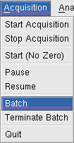
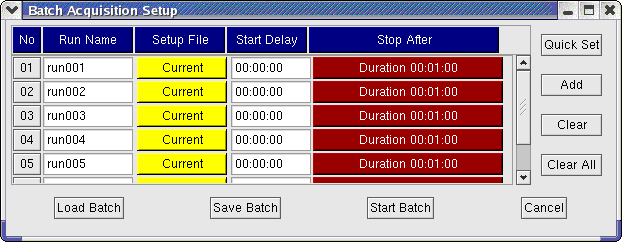
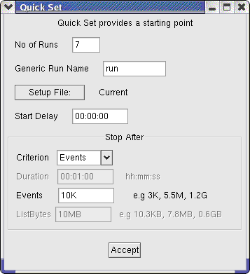

 |
BATCH ACQUISITION |
Click Acquisition → Batch:

A number of runs can be defined to run consecutively without user intervention. The second column gives the run name, the third column gives the name of the setup file (Current will use the setup file presently in memory), the fourth column allows the run to commence after a specified delay (hh:mm:ss) and the last column is the stop condition. It is possible to stop after a specified duration, events or list bytes. Any of the fields in the table can be edited by clicking on it.
After preparing a batch sequence one should save it by "Save Batch" (file names end in .acq) so that it can be later recalled by "Load Batch".
Notice the buttons on the right. One can clear all the entries in the list with "Clear All", a particular entry with "Clear" and add a new entry with "Add". It is best to first prepare a skeleton with the "Quick Set" button and then make changes as required. The "Quick Set" button gives a simple dialog as follows:
